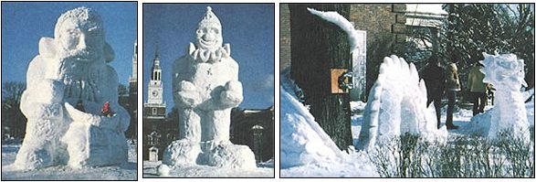

Photos Courtesy of Dartmouth College Photograph Records
From Dartmouths Winter Carnivals: An ""Old Man of the Snows"" (LEFT) dwarfs the two students in his bowl. A clown (CENTER) is ready to juggle snowballs in front of Baker Library. As its expression suggests, this magnificent dragon (RIGHT) is being attacked by an icy, unseen St. George